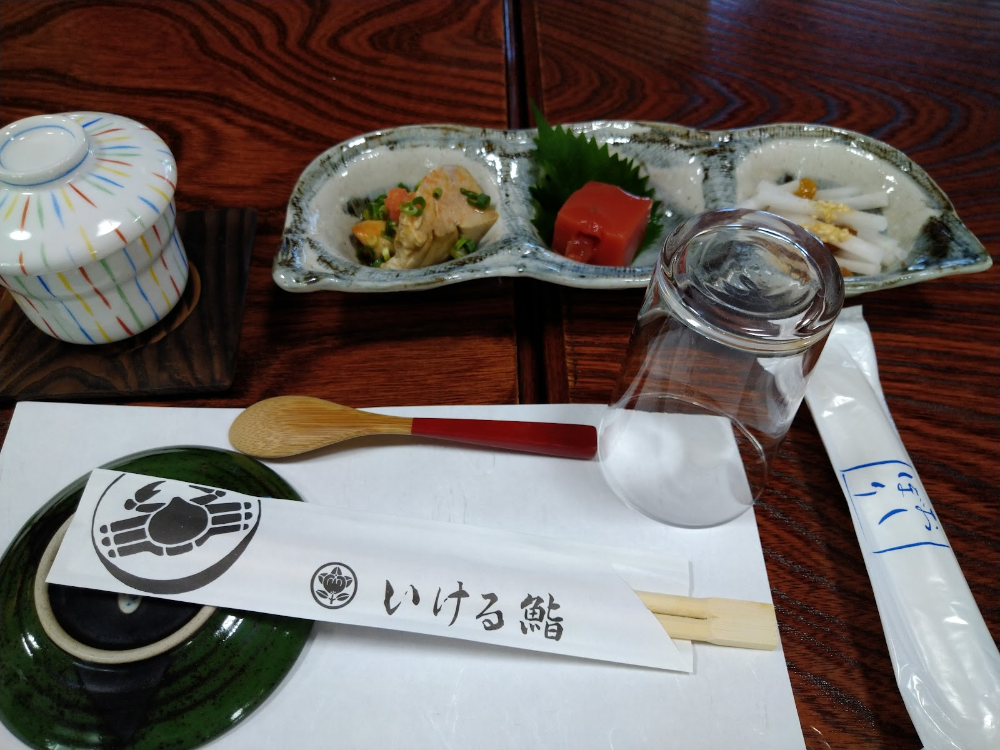
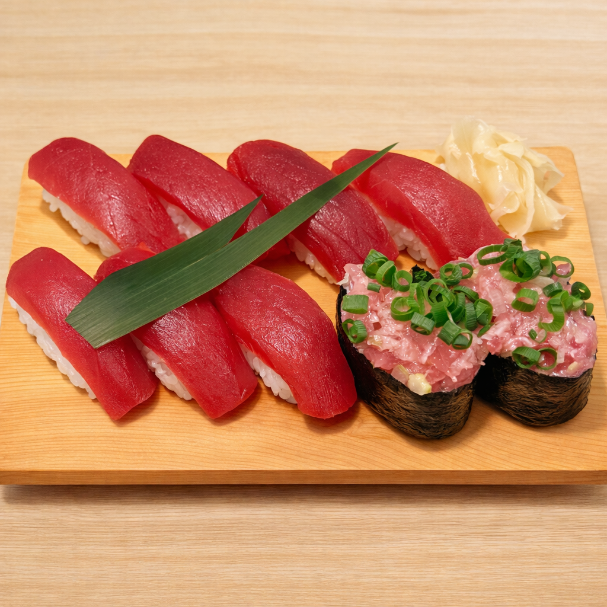

いける鮨のこだわり
カウンター席・お座敷席それぞれの空間づくりと、実際にご来店されたお客様の声から、いける鮨の雰囲気をご紹介いたします。
座席・空間について
いける鮨には、カウンター席とお座敷席をご用意しております。木目を活かしたテーブルや、家紋をあしらった箸袋など、落ち着いた和の設えの中でお食事をお楽しみいただけます。

寿司店としての一般的な魅力
寿司は、その日のネタの状態によって少しずつ表情を変える料理といわれます。カウンター席では握りたてを目の前でお楽しみいただけるなど、寿司店ならではの時間の過ごし方があります。

ご来店・お問い合わせはお電話またはInstagramのDMにて承っております。